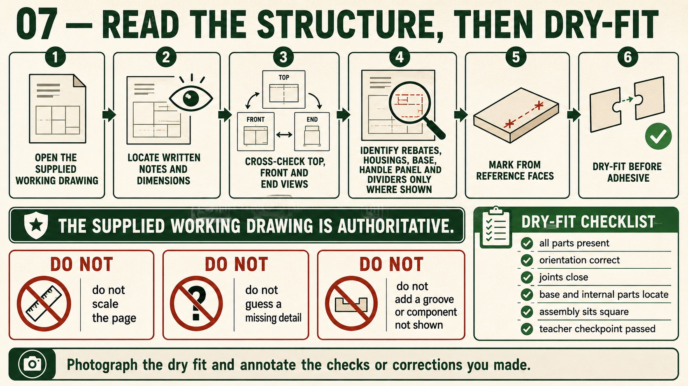

Weeks 9-10
This module
Form the structural grooves shown on the plan and test the complete arrangement before adhesive commits the work.
Your work
Student details
Your entries save automatically in this browser. Use Print / Save PDF before leaving the page.
Theory 1
Forming the base rebate accurately

The base rebate is a recessed edge formed where shown in the Carry-All working drawing. Its purpose is to support and locate the 3 mm plywood base within the surrounding pine components. Instead of relying only on an edge connection, the rebate provides a ledge that helps control the base position during dry assembly and final construction. The drawing shows a 5 mm rebate where this note is explicitly indicated; students must not assume that the same measurement applies to any unlabelled feature.
A rebate has two important surfaces: the shoulder and the depth surface. The shoulder controls the edge position of the plywood, while the depth surface supports it. Both need to remain consistent along the required length. A shoulder that wanders can make the base fit unevenly, and an inconsistent depth can leave the plywood rocking, sitting too high or dropping below the intended position. The exact teacher-approved method must follow the school SOP, SWMS and workshop demonstration.
Continuity around the corners is also important. Rebates formed on adjoining components must meet in a way that allows the plywood base to sit correctly throughout the assembled Carry-All. A rebate that stops early, changes position or fails to align with the next component can create an unsupported area or prevent the corner joint from closing. Check the relationship between the rebates, corner joints and component orientation before removing material.
- Confirm which components require the rebate by reading all relevant views.
- Identify the reference face, shoulder line, depth and waste area.
- Use the 5 mm note only where it is clearly shown on the drawing.
- Check shoulder position and depth consistency progressively.
- Trial the plywood base during dry assembly without forcing it.
Trial checks should occur before adhesive is applied. The 3 mm plywood base should enter the completed rebate arrangement in the correct orientation and rest on the supporting surfaces. It should not need to be bent or forced into position. Check whether the base sits evenly, whether the surrounding components meet properly and whether each corner continues to close. If the fit is incorrect, identify whether the fault is in the rebate, component orientation, joint fit or plywood condition before making any adjustment.
Common faults include an uneven shoulder, excessive depth, insufficient depth, damaged edges, a rebate formed on the wrong face or poor continuity at a corner. Removing too much material cannot be reversed, so corrections must be small and teacher-approved. Folio evidence should show the rebate before final assembly and explain how its shoulder, depth and base support were checked.
Theory 2
Locating dividers and the handle with housing joints
Housing joints are recessed channels formed where shown in the Carry-All working drawing. Their purpose is to locate and support internal parts such as the dividers and the central handle or handle panel. A correctly formed housing helps prevent these parts from shifting during dry assembly, adhesive application and clamping. It also gives each component a clear position, helping the completed Carry-All remain aligned, functional and visually balanced.
Each housing has shoulders that control the position and fit of the inserted component, together with a depth surface that supports it. The shoulders should be straight, parallel where required and consistent from one side of the housing to the other. An uneven depth can cause a divider or handle panel to rock, lean or sit at a different height from its matching location. Where the working drawing explicitly shows a 5 mm housing, that written note must be followed. It must not be assumed for unlabelled features.
The location of every housing must come from the supplied drawing and teacher directions. Students must not estimate positions from appearance, measure the drawing itself or place internal parts where they simply seem suitable. Reference faces, edges and written information should be used consistently when marking matching components. This is especially important where corresponding housings must align across opposite sides so that a divider or handle panel does not twist during assembly.
- Confirm which components require housings by cross-checking the drawing views.
- Mark each housing from the same approved reference face or datum.
- Check shoulder position, width and depth before trial assembly.
- Compare matching housings across both sides for alignment.
- Dry-fit the dividers and handle panel without forcing any component.
Dry checks reveal whether the housings locate the parts correctly before adhesive is introduced. The dividers and handle panel should enter in the intended orientation, seat against the depth surfaces and remain aligned with the surrounding Carry-All components. At the same time, the corner joints and plywood base arrangement should still fit as planned. If one part sits unevenly or prevents the assembly from closing, identify whether the cause is the housing, component orientation, joint fit or marking before removing more material.
Common faults include housings positioned on the wrong face, mismatched locations across the sides, damaged shoulders, excessive depth, shallow sections or a fit that is unnecessarily loose. Removing more timber cannot repair an oversized housing. Any correction must therefore be small, controlled and approved by the teacher. Process evidence should show how the housings were checked for alignment and how they supported accurate dry assembly.
Theory 3
Dry fitting the Carry-All structure

Dry fitting means assembling the Carry-All without adhesive so the complete structure can be checked before the parts are permanently joined. The sides, 3 mm plywood base, dividers and central handle or handle panel should be placed in their correct orientation according to the working drawing and teacher directions. This stage confirms that the separate components work together, not just that each part looks accurate on its own.
Begin by checking component identity, reference marks and inside and outside faces. Corner joints must match their intended partners, while the base must enter the rebates shown on the drawing and the dividers and handle panel must locate in their housings. Parts should seat without being forced. If a component only fits when bent, twisted or driven into place, the assembly is not ready for adhesive and clamping.
- Confirm the orientation of every side, divider and handle component.
- Check that corner joints seat fully and edges align.
- Make sure the plywood base rests consistently in its rebates.
- Inspect the dividers and handle panel for correct housing fit.
- Check the structure for squareness, rocking and visible twist.
Squareness describes whether adjoining parts meet at the intended right angles. Twist occurs when the structure does not sit evenly in one plane, causing opposite corners or edges to rise or fall. A Carry-All may appear acceptable from one direction but still be twisted or out of square. Checks should therefore be made from several viewpoints using teacher-approved methods and reliable reference surfaces. The assembly should also sit steadily without unnecessary pressure holding it in shape.
The base fit is an important whole-structure check. The plywood should sit evenly within the rebate arrangement while allowing the sides and corner joints to close correctly. If the base rocks, bows, prevents a corner from seating or appears misaligned, identify the cause before altering anything. The problem may involve component orientation, rebate continuity, a housing, a corner joint or the condition of the plywood rather than the base alone.
Dry fitting creates the final opportunity to correct faults before adhesive limits access and movement. Adjustments should be small, deliberate and approved by the teacher. Removing material without locating the actual high point can turn a tight joint into a loose one. A useful folio record should show the assembled Carry-All and explain the checks completed, any fault identified and the correction made before final assembly.
Guided practice
Weeks 9-10 knowledge checks
Choose an answer, check it and use the progressive hints and feedback to improve.
Apply your learning
Scaffolded written responses
Write first, use the feedback prompts, then compare your reasoning with the appropriate response example.
Finish the two-week block
Save your evidence
Your work saves in this browser, but browser storage is not the official submission. Save the completed page as a PDF before changing devices or clearing browser data.
No marks, answers or personal information are sent from this webpage.